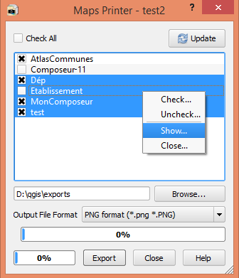

Welcome to Maps Printer’s documentation!¶
Even though multiple pages and atlas options have improved print composers usability and help enough to create many maps with few print composers in a project, you can still have many print composers in your project. And when comes the time to print or export them, it is not as fun as it could be. You indeed need to open each print composer, wait till it renders, fill the export options, wait till the export finishes to open the next composer. And so on... If you find this process long and somehow boring (and even if you do not), then Maps Printer plugin is designed for you. It offers an easy, simple and quicker way to export print composers to pdf or image (jpg, tif, png, bmp...) file format.
Installing¶
There are many ways to install a QGIS plugin
From QGIS Desktop¶
This is the easiest option.
click on Extension menu and choose “Manage and Install plugins...”
Do a research among all plugins with expression like maps, print, composer ...
Select Maps Printer in the filtered results and click on Install button.
From QGIS plugins repository¶
Maps Printer is available in the QGIS official plugins repository.
Select the version you wish to install according to your QGIS version and click on Download.
Unzip the file and copy/paste MapsPrinter subfolder into your user plugin folder (\.qgis2\python\plugins\).
From Maps Printer’s repository¶
Maps Printer’s code source is available on Github.
Among the existing branches, select the release version you wish to install according to your QGIS version and click on Download ZIP.
Unzip the file, rename the subfolder to MapsPrinter and copy/paste it into your user plugin folder (\.qgis2\python\plugins\).
Using Maps Printer plugin¶
Installing Maps Printer plugin provides a sub-menu in Extension menu that contains an entry to launch the plugin and another one to reach this documentation. An icon is also added to the plugin’s toolbar. Once you have created and set at your convenience your print composers and wish t export some of them, just click on Maps Printer icon. The following dialog is opened.
Exporting print composers¶
Maps Printer’s main aim is to make easier the export of print composers to pdf or image (jpg, jpeg, tif, png, ico...) file format. Launching Maps Printer opens a dialog with a frame listing all available print composers. An Update button is available to keep up to date this list when print composers are newly created or deleted.
To export your layouts :
- Check the print composers you wish to (either one by one or by doing a multiple selection, right click > Check)
- Choose a folder for the exported files
- Select a file format
- and click on “Export” button.
Show or hide print composers¶
If you want to make changes in some of your print composers, you no longer need to open them one by one. Selecting them and right clicking opens a context menu from which the “Show” option will open all these print composers. Hiding many composers at once is alsopossible with the “Close” command.
Tips & Tricks¶
If a print composer is atlas enabled, this will generate an atlas while exporting, according to the options set. If you just want to export the map, you should disable atlas generation before.
The “Update” button helps to add to the list new print composers that may have been created since the dialog is open. It also erases those that may have been deleted or renamed.
Pugin developped by Harrissou Sant-anna (CAUE 49)